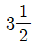
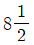
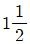

피아노조율기능사 (2003-07-20 기출문제)
1과목: 임의 구분
1. 다음은 피아노 발달사에 관한 설명이다. 그 중 연대가 가장 빠른 것은?
- 브로드우드가 6옥타브 피아노 제작
- 와이어를 만드는 다이어몬드 다이스 출현
- 토마스 라우드의 교차식 현의 특허
- 파리에서 에라르가 최초로 피아노 제작
(정답률: 알수없음)

2. 피아노에 사용되는 중음부 19번선의 지름은 몇 mm인가?
- 약 1.⑤0 ± 0.013
- 약 1.075 ± 0.013
- 약 1.125 ± 0.013
- 약 1.225 ± 0.013
(정답률: 알수없음)
3. 21번 센터핀의 굵기는 몇 mm 인가?
- 1.300mm
- 1.325mm
- 1.350mm
- 1.375mm
(정답률: 알수없음)
4. 피아노의 음에 대한 설명 중 옳지 않은 것은?
- 음계는 순정율과 중간음율로 해야 하고 피치는 a' = 440Hz를 기준으로 한다.
- 음의 퍼짐성이 풍부하여야 한다.
- 강.약음의 범위가 모두 넓게 표현될 수 있어야 한다.
- 음역은 88건일 경우 대략 27.5-4186.01Hz를 기준으로 한다.
(정답률: 알수없음)
5. 향판의 가장 중요한 특성으로만 나열된 것은?
- 음량조절, 음의 전달, 음질의 변화
- 진동의 지속, 음의 확대, 음의 합성
- 진동의 변화, 음량조절, 음의 합성
- 음질의 변화, 진동의 확대, 음량조절
(정답률: 알수없음)
6. 건반대 상면에서 백건 상면까지의 높이는 일반적으로 어느 정도가 정상인가?
- 52mm
- 64mm
- 76mm
- 98mm
(정답률: 91%)
7. 중형 이상의 피아노에서 건반의 운동거리는 백건전면에서 몇 mm가 기준인가?
- 8mm
- 10mm
- 12mm
- 14mm
(정답률: 알수없음)
8. 다음 설명 중 옳지 않은 것은?
- 향판은 활모양으로 성형되어야 한다.
- 브리지는 향판면에 확실히 접착되어야 한다.
- 브리지핀은 현이 브리지에 밀착될 수 있도록 경사져 있어야 한다.
- 향봉은 원칙적으로 향판의 나뭇결 방향과 동일하게 접착되어야 한다.
(정답률: 알수없음)
9. 1840년 총철골에 대한 특허를 받은 사람은?
- 에라르(Erard)
- 호킨스(Howkins)
- 칙카링(Chickering)
- 스타인웨이(Stein Way)
(정답률: 알수없음)
10. 향봉과 브리지에 대한 설명 중 틀린 것은?
- 향봉은 향판재와 같은 재질로 만든다.
- 향봉은 음 전달의 목적보다는 크라운을 보강하는 역할을 한다.
- 브리지는 현의 진동을 향판에 전해주는 역할을 한다.
- 현대 피아노는 긴 브리지, 짧은 브리지 2종이 있다.
(정답률: 알수없음)
11. 일반적으로 공기중에서 소리의 속도가 340m/sec일 때의 개략적인 온도 기준은?
- 0℃
- 10℃
- 15℃
- 100℃
(정답률: 알수없음)
12. 만약 해머가 현의 중앙을 타현하면 어떤 부분음이 포함되지 않는가?
- 3, 6, 9, 12
- 3, 9, 15, 21
- 5, 10, 15, 20
- 2, 4, 6, 8
(정답률: 알수없음)
13. 흑연칠을 해서 안되는 곳은?
- 댐퍼 레버 클로스
- 캐쳐스킨
- 잭의 상단
- 잭이 레규레이팅 버튼과 접촉하는 자리
(정답률: 알수없음)
14. 음파가 어떤 장애물을 만났을 때 돌아서 지나가므로 그 뒤쪽에서도 들리는 현상은?
- 반사
- 굴절
- 회절
- 공명
(정답률: 알수없음)
15. 순음에 속하지 않는 것은?
- 음색의 차이를 감별할 수 없는 음
- 강약 고저의 성질을 가진 음
- 오직 한 개의 주파수를 갖는 진폭이 일정한 소리
- 보통의 악기에서 울리는 음
(정답률: 알수없음)
16. 높은 주파수와 비교하여 낮은 주파수의 성질은?
- 반사는 하나 즉시 흡수되는 성질이 강하다.
- 회절 또는 흡수되는 성질이 강하다.
- 흡수가 빨라서 반사, 회절을 잘못한다.
- 장애물이 있어도 우회하여 나아가는 회절작용이 있거나 반사하는 성질이 강하다.
(정답률: 알수없음)
17. 일정한 강도에서 사람이 가장 잘 들을 수 있는 주파수(Hz)는?
- 30
- 300
- 3000
- 30000
(정답률: 알수없음)
18. 음의 크기가 최저 가청한계값보다 음강도 레벨이 증가할 때 소리를 감지할 수 있는 상태와 최저 가청한계보다 증가한 ㏈의 값을 무엇이라 하는가?
- 매스킹효과(masking effect)
- 등감곡선
- 히어링로스(hearing loss)
- 가청한계
(정답률: 알수없음)
19. 평균율에서 장3도를 몇 번 계속하면 1옥타브가 되겠는가?
- 3번
- 6번
- 9번
- 12번
(정답률: 100%)
20. 기음이 400Hz일 경우 부분음이 옳게 나열된 것은? (단위:Hz)
- 100, 200, 300, 400
- 100, 400, 800, 1000
- 800, 1200, 1600, 2000
- 800, 1600, 3200, 6100
(정답률: 알수없음)
2과목: 임의 구분
21. 순정율의 음정비율을 옳게 나타낸 것은?
- 단3도 – 4:5
- 장3도 - 5:6
- 단6도 – 5:8
- 장10도 - 3:5
(정답률: 92%)
22. 4도, 5도 음정에 관한 설명 중 틀린 것은?
- 5도의 음정비는 2:3이다.
- 4도의 음정비는 3:4이다.
- 순정조에서 4도, 5도는 맥놀이가 없다.
- 5도 음정의 검사법은 아래로 장3도 위로 단3도 취했을 때 맥놀이가 같아야 한다.
(정답률: 알수없음)
23. A#38이 232.08188Hz이면 몇 Hz낮은가? (단, A37 : 220Hz, 반음정비 : 1.⑤94631)
- 4
- 3
- 2
- 1
(정답률: 알수없음)
24. 다음은 주파수에 관한 설명이다. 옳은 것은?
- 주파수는 현의 길이에 정비례한다.
- 주파수는 현의 지름에 정비례한다.
- 주파수는 현의 밀도의 제곱근에 반비례한다.
- 주파수는 그 장력의 제곱근에 반비례한다.
(정답률: 알수없음)
25. 아래 문장은 조율 유지에 관한 설명이다. 틀린 것은?
- 기본음을 필히 맞추어 조율을 하여야 한다.
- 동음을 무시하고 조율을 행하여야 한다.
- 연주자의 부탁에 따라 조율을 하여야 한다.
- 테스트 블로우(TEST BLOW)를 충분히 하여야 한다.
(정답률: 알수없음)
26. 디디마스콤마(Didymus comma)란?
- 8도와 피타고라스 장7도의 차
- 대전음과 소전음의 차
- 소전음과 반음의 차
- 5도의 누적에서 오는 차
(정답률: 알수없음)
27. 다음 음정에서 협화가 가장 잘되는 음정은?
- 완전5도
- 완전4도
- 장3도
- 장6도
(정답률: 알수없음)
28. 조율자세와 튜닝 해머 각도에 대한 설명 중 틀린 것은?
- 튜닝 해머는 가능한한 수직상태에 꽂고 조율한다.
- 팔꿈치는 가능한한 고정시킨 상태에서 조작한다.
- 튜닝 해머는 항상 힘껏 돌려야 한다.
- 작은 피아노( 높이 1m내외)는 앉아서 조율하는 것이 편하다.
(정답률: 알수없음)
29. 음계에 대한 설명 중 옳지 않은 것은?
- 음계는 장음계와 단음계로 나눌 수 있다.
- 일반적으로 반음이 섞여있는 음계를 반음계라 한다.
- 장음계는 C음에서 시작하여 원음만으로 구성되어 있다.
- 단음계는 음정 구조의 차이에 따라 자연스런단음계, 화성스런단음계, 가락스런단음계로 구분한다.
(정답률: 64%)
30. 공진 현상을 옳게 설명한 것은?
- 기본음과 배음계열에 있는 개방된 진동체가 공명하는 현상
- 기본음과 관계없이 모든 진동체가 공명하는 현상
- 상하단 잡음소리와 같은 현상
- 기본음과 같은 상태에서만 울리는 현상
(정답률: 알수없음)
31. 피아노 현의 부분음에 영향을 주는 요소가 아닌 것은?
- 현의 경도
- 현의 균질성
- 현의 높이
- 현 양단의 고정상태
(정답률: 알수없음)
32. C28와 C40의 옥타브 화음이 정확히 조율되었을 경우 각 음정간의 맥놀이 관계는?
- C28-F33가 맥놀이 2개면 F33 - C40도 맥놀이 2개
- C28-G35가 맥놀이 2개면 G35 - C40도 맥놀이 2개
- C28-A37가 맥놀이 2개면 A37 - C40도 맥놀이 2개
- C28-E32가 맥놀이 2개면 E32 - C40도 맥놀이 2개
(정답률: 알수없음)
33. 조율해머를 조작할 때 회전방법이 이상적인 것은?
- 조율해머를 핀의 회전 각도에 맞춘다.
- 조율해머를 약간 앞으로 당겨가며 조작한다.
- 조율해머를 약간 뒤로 밀며 회전시킨다.
- 조율해머와 핀사이가 약간 헐겁게 해서 돌린다.
(정답률: 알수없음)
34. 정음을 할 때 사용되는 공구는?
- 해머 아이롱
- 키 플라이어
- 생크 플라이어
- 레규레이팅 스크류 드라이버
(정답률: 90%)
35. 키 스페이서란?
- 바란스 핀을 조정하는 공구
- 바란스 구멍을 넓혀주는 공구
- 후론트 핀의 구멍을 넓혀주는 공구
- 후론트 핀을 좌우로 돌려 헐거운 건반을 조정하는 공구
(정답률: 알수없음)
36. 업라이트 피아노의 댐퍼 와이어를 구부리는데 사용하는 공구는?
- 스푼 어드자스터(spoon adjuster)
- 댐퍼 레귤레이터(damper regulater)
- 와이어 리프터(wire lifter)
- 페이퍼 아이론(paper iron)
(정답률: 알수없음)
37. 건반 동작 검사에서 10mm 들었다 놓을 때 어떤 상태가 가장 적절한가?
- 빠른 속도로 내려간다.
- 빡빡한 상태로 멈추어 있다.
- 자체의 중량으로 살며시 내려간다.
- 손으로 눌러서 내려간다.
(정답률: 91%)
38. 로스트 모숀(Lost motion)이란?
- 해머가 동작하기 전의 헛된 움직임
- 받드가 잭에 닿는 순간의 움직임
- 위펜이 움직일 때 해머가 동작하는 상태
- 잭이 받드를 밀어 줄 때의 움직임
(정답률: 알수없음)
39. 애프터 터치의 양이 부족한 원인 중 틀린 것은?
- 타현거리가 너무 멀다.
- 건반깊이가 너무 얕다.
- 캡스턴 조정에 로스트모숀이 많다.
- 댐퍼스푼 조정량이 모자란다.
(정답률: 50%)
40. 댐퍼스푼 조정은 건반을 눌러서 해머가 몇 mm진행했을 때 댐퍼가 뜨기 시작해야 하는가? (단, 중형 피아노인 경우)
- 7 ± 2mm
- 20 ± 2mm
- 27 ± 2mm
- 34 ± 2mm
(정답률: 알수없음)
3과목: 임의 구분
41. 다운베어링(down bearing) 수리 방법 중 가장 간편하고 적절한 방법은? (단, 향판 크라운에는 문제가 없을 경우)
- 수리 방법이 없다.
- 브리지를 새것으로 교환한다.
- 철골(프레임)을 낮게 재조립한다.
- 가라앉은 부분의 현 받침 베어링을 샌딩하여 낮추어 준다.
(정답률: 92%)
42. 댐퍼가 우측으로 돌아가서 현과의 각도가 맞지 않아 지음이 되지 않을 때에는 어떻게 조정하는가?
- 댐퍼블럭 나사를 풀어 좌측으로 돌려 각도를 맞춘 다음 나사를 조인다.
- 댐퍼블럭을 떼어 내어서 접착제를 칠한 후 못을 박고 각도를 맞추어 붙인다.
- 댐퍼 플랜지 나사를 풀어 각도를 맞춘 다음 나사를 조인다.
- 피아노의 현을 좁혀서 댐퍼 간격을 맞춘다.
(정답률: 알수없음)
43. 업라이트 피아노에서 애프터 터치의 양에 대한 설명으로 옳은 것은?
- 건반의 깊이에 비례하고 타현거리에 반비례한다.
- 건반의 깊이와 타현거리에 비례한다.
- 건반의 깊이와 타현거리에 반비례한다.
- 건반의 깊이에 반비례하고 타현거리에 비례한다.
(정답률: 알수없음)
44. 댐퍼 페달을 밟았을 때 댐퍼 동작이 맞지 않을 때에는 무엇을 수정해야 하는가?
- 댐퍼와이어 전후를 구부려 조정한다.
- 댐퍼블럭을 꼭조여서 일직선이 되도록 한다.
- 댐퍼펠트가 부풀도록 페퍼로 갈아준다.
- 댐퍼스푼을 잡아서 일직선이 되게 한다.
(정답률: 알수없음)
45. 레귤레이팅 버튼 펀칭 크로스를 교환할 때는?
- 전과 동일한 두께의 크로스로 교환한다.
- 전보다 얇은 크로스로 교환한다.
- 전보다 두꺼운 크로스로 교환한다.
- 헝겁을 겹겹이 알맞게 해서 붙인다.
(정답률: 알수없음)
46. 받드(butt) 센터핀이 몹시 굳어 실리콘유를 발라도 동작이 둔할 때 수리 방법은?
- 센터핀 양단을 샌드페퍼로 갈아준다.
- 송곳으로 센터핀 구멍을 무조건 넓혀준다.
- 물칠을 했다가 급격히 말린다.
- 리머로 양구멍을 관통해서 적당하게 넓혀준다.
(정답률: 알수없음)
47. 캡스턴 와이어를 뒤로 구부리면 어떤 현상이 생기는가?
- 애프터 터치가 많아진다.
- 해머스톱이 멀어진다.
- 건반무게가 가벼워진다.
- 건반깊이가 깊어진다.
(정답률: 알수없음)
48. 잭 플랜지 센터핀이 너무 빡빡하다. 수리방법 중 틀린 것은?
- 센터핀 부싱(bushing)에 윤활유를 주입한다.
- 센터핀 부싱을 넓혀준다.
- 부싱의 습기를 없애준다.
- 가는 핀으로 바꿔 끼운다.
(정답률: 알수없음)
49. 해머헤드 니들링(needling)이란 무엇인가?
- 해머 헤드를 바늘로 찔러서 정음 작업을 하는 것을 말한다.
- 해머 헤드를 접착하는 것을 말한다.
- 해머 헤드를 깍아 성형하는 것을 말한다.
- 해머 헤드 다림질을 말한다.
(정답률: 알수없음)
50. 건반의 바란스 홀 부근이 부러졌을 때의 접착하는 방법 중 옳은 것은?
- 건반 양면에 철판을 대고 못으로 박아 붙여준다.
- 건반 양면에 얇은 종이를 붙여 접착한다.
- 부러진 건반에 스카치 테이프로 감아 접착한다.
- 부러진 건반의 양면에 얇은 나무판을 깍아 끼운다.
(정답률: 82%)
51. 다음 중에서 셀룰로이드 건반을 붙일 때에 가장 옳은 방법은?
- 셀룰로이드를 석유에 담구어 녹인 다음 붙인다.
- 아세톤을 셀룰로이드 건반에 발라서 붙인다.
- 셀룰로이드를 아세톤에 용해하여 접착한 후 마무리한다.
- 셀룰로이드를 아세톤에 씻은 후 강력 접착제로 붙인다.
(정답률: 80%)
52. 휘어진 건반을 수리하려고 할 때 가장 옳지 않은 방법은?
- 물칠을 약간 한 후 적당히 열을 가해 바로 잡는다.
- 휘어져 접촉하는 부위를 줄이나 대패로 깎아준다.
- 무거운 물건을 올려놓아 바로 잡는다.
- 바란스핀의 위치를 약간 좌우로 옮겨준다.
(정답률: 알수없음)
53. 강선 교환 후 잡음 또는 거짓비트(beat)가 생기는 원인이 아닌 것은?
- 튜닝핀에 감긴 횟수가 다를 경우
- 베어링 부분에 이상이 있을 경우
- 현이 브리지에 완전 밀착되지 않았을 경우
- 현이 꼬여서 장현되었을 경우
(정답률: 알수없음)
54. 강선 교환 후 롤러로 미는 가장 큰 이유는?
- 구부러졌던 현을 펴기 위하여
- 피치의 빠른 안정을 위하여
- 현의 간격을 유지하기 위하여
- 음색을 곱게하기 위하여
(정답률: 90%)
55. 현을 교환하려면 몇회전으로 하는 것이 가장 적당한가?

회전- 6 회전

회전
회전
(정답률: 알수없음)
56. 해머가 2중 타현을 하는데 관계가 없는 것은?
- 건반깊이
- 댐퍼스푼
- 백첵
- 캡스턴
(정답률: 알수없음)
57. 건반과 건반이 캡스턴 블럭측편에서 닿아 잡음이 날때에 그 처리 방법은?
- 닿는 부분을 망치로 때린다.
- 밸런스핀을 옆으로 구부려 놓는다.
- 맞닿는 부분을 드라이버로 벌려 놓는다.
- 맞닿는 자리를 줄이나 샌드페이퍼로 약1mm 간격이 생기게 깎아낸다.
(정답률: 60%)
58. 피아노 주변에서 잡음을 유발하는 요인이 아닌 것은?
- 피아노 위에 올려 놓은 무거운 책
- 창문의 커튼 고리
- 조명등의 유리판
- 벽에 걸은 벽시계
(정답률: 90%)
59. 캡스턴 조정 작업 중 옳은 것은?
- 캡스턴와이어를 구부릴 때는 일반 플라이어로 하여도 상관없다.
- 건반 앞쪽이 무거워 로스트모숀이 없는 것처럼 보일때에는 캡스턴 쪽을 누르면서 조정한다.
- 잭과 받드사이는 2-8mm정도 로스트모숀이 있도록 조정한다.
- 캡스턴 와이어를 구부릴 때에는 항상 중앙 부분을 구부려야 한다.
(정답률: 50%)
60. 머플러 페달은 무슨 역할을 하는가?
- 음을 강하게 한다.
- 음을 약하게 한다.
- 음의 감각을 좋게 한다.
- 음의 폭이 넓게 들리도록 한다.
(정답률: 알수없음)